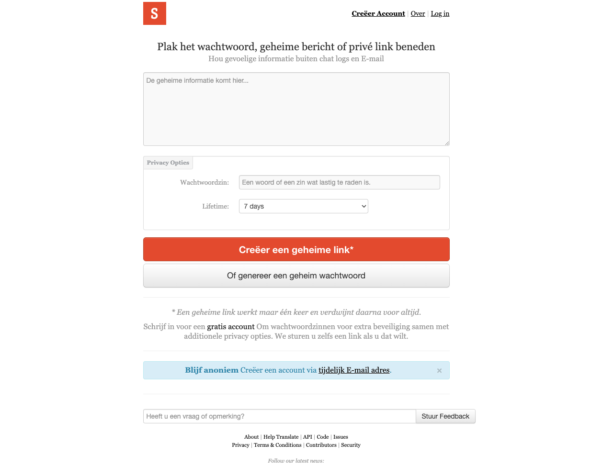
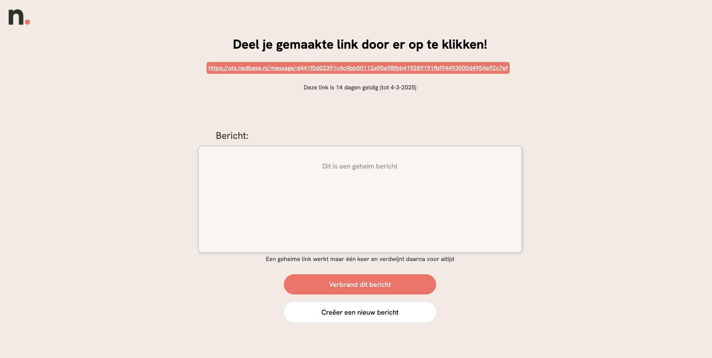

Dit project heb ik gedaan tijdens mijn meewerkstage bij Nedbase Digital Agency
De traffic medewerkers van Nedbase gebruiken een website die de naam ots.nedbase.nl heeft. Op deze website kunnen de medewerkers een bericht, wachtwoord, url etc. invullen die daarna wordt gegenereerd tot een willekeurige url. Deze url sturen de traffic medewerkers door naar bijvoorbeeld klanten van Nedbase. De klanten kunnen deze url dan weer openen waarna zij dus het desbetreffende bericht, wachtwoord, url etc kunnen zien.
Een gegenereerde url is maximaal 7 dagen geldig en wordt na het openen meteen verwijderd. Op deze manier kan er dus op een veilige manier gegevens heen en weer worden gestuurd
De trafficmedewerkers stuiten echter op verschillende problemen. Zo komt de website onbetrouwbaar over omdat deze niet in de Nedbase huisstijl is vormgegeven. Daarnaast is het voor klanten onduidelijk hoe lang een URL geldig blijft, en ook dat de URL na opening wordt verwijderd, is niet duidelijk. Dit is natuurlijk onhandig als een klant met verlof is of ziek is dat de url dan vervalt. Bovendien bevat de website te veel overbodige informatie. Het was aan mij om dus de website te voorzien van een beter layout en functionaliteit.
Na wat brainstormen en gesprekken kwam ik op het idee om de geldigheid van de URL te veranderen naar 14 dagen in plaats van 7 dagen, om te voorkomen dat klanten de URL te laat openen. Ook koos ik ervoor om het kleurencontrast van de linker afbeelding te gebruiken, volgens de Nedbase huisstijl. Ik maakte een definitief Figma concept als laatste ontwerp.
Voor de realisatie besloot ik de website uit te werken in het Angular framework, omdat ik dit framework graag wilde leren. Uiteindelijk is de linker afbeelding de oude website en de rechter afbeelding de nieuwe website die ik heb ontworpen. Bij dit project leerde ik hoe ik gesprekken met stakeholders kan voeren, de uitkomsten van die gesprekken kan vertalen naar ontwerpen, en uiteindelijk een ontwerp heb gerealiseerd dat in gebruik wordt genomen bij Nedbase. Ook voerde ik behavior tests en code reviews uit om te reflecteren op mijn geschreven code.
 Bij dit project heb ik geleerd hoe ik gesprekken met stakeholders kan voeren, de uitkomsten van die gesprekken kan vertalen naar ontwerpen, en uiteindelijk een ontwerp heb gerealiseerd dat in gebruik wordt genomen bij Nedbase.